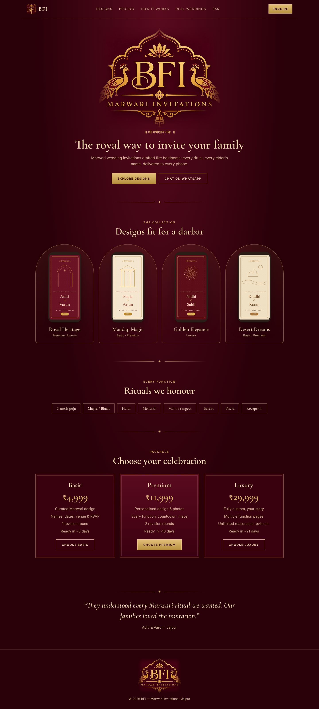

Dark royal palace
1 · Darbar
Deep maroon throughout, gold gradients, centered logo hero, arch-shaped design frames, all-caps refined buttons.
Fonts: Cormorant Garamond + Inter
Best for: Families wanting grandeur; Luxury & NRI clients; strongest logo presence.
Watch out: Dark pages are heavier to read for long text; needs care for older eyes.